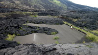

Hawaii - 4/3/2013 au 11/06/2013
L'archipel d'Hawaii a presque tout: des paysages grandioses, un climat agréable, des infrastructures et un avitaillement pléthorique. Il y a Big Island, la volcanique, à la population très détendue. Il y a Maui, la huppée, à la population en vacance. Il y a Molokai, la sauvage, à la population réfractaire au tourisme de masse. Il y a Honolulu, l'économique, à la population active et stressée. Il y a aussi d'autres îles mais les douanes ne nous ont pas laissé les visiter.
Mais Hawaii n'a plus d'âme. Hawaii n'a plus grand'chose de Polynésien. La population est un mélange d'européens venus accaparer les terres, d'asiatiques venus travailler dans les plantations de canne à sucre et d'autochtones venus en pirogue. Le brassage a assez bien fonctionné, ce qui fait qu'il ne reste pratiquement plus rien de la culture ancestrale des premiers habitants, si ce ne sont les ersatz créés de toutes pièces pour le flot permanent de touristes américains et japonais.
Les îles volcaniques ne sont pas faites pour les voyageurs en voilier: dès le départ, l'accueil des douaniers est froid et le contrôle des bateaux dignes d'un état totalitaire, les mouillages forains sont rares, les séjours en marina se révèlent vite assez coûteux pour une famille de 5 personnes (emplacement + 10$ par jour pour la 'vie à bord') et ne sont pas prévues pour les 'itinérants' (aucun service à proximité, voiture indispensable, même pour l'avitaillement). Excepté à Honolulu, il est difficile de trouver des professionnels et du matériel. Et même là, il faut disposer de beaucoup de temps pour silloner la ville.
Bref, l'indéniable potentiel touristique de l'archipel a été bien compris et sécurisé par les américains qui accueillent paquebots et avions par dizaines et qui ne comptent pas laisser les 'parasites' en bateau, par essence rebelles, venir troubler leur belle machine à faire du fric. C'est dommage car c'est un endroit magnifique !
On garde: Les paysages sidérants.
On scratche: Les douaniers et leurs réglements stupides.

